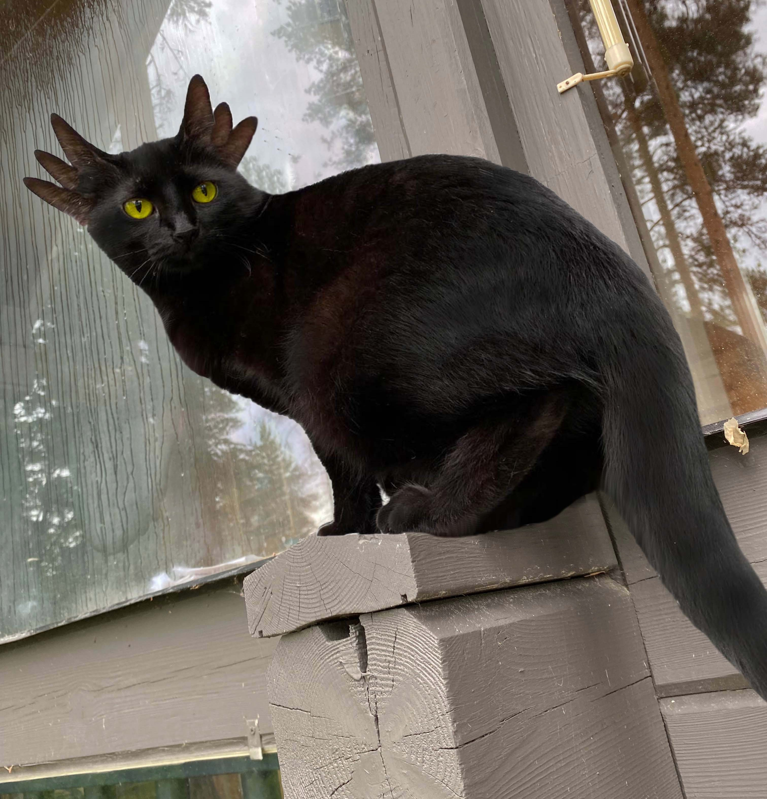

Olemme erikoistuneet erityisesti sivulla esiteltyjen eläinten ruuan ja hoitotarvikkeiden myyntiin. Alla voit lukea lisää näistä eläimistä ja niiden hoitotarpeista. Voit myös ottaa yhteyttä eläintenhoitajaamme, jos tarvitset apua ruokintaan tai hoitoon liittyen.
Liettualainen yksisarvinen
Liettualainen yksisarvinen on harvinainen hevosen kaltainen eläin, jonka voi löytää villinä Liettuan luonnonsuojelualueelta. Yksisarvinen valitsee omistajansa, joten sitä ei voi ostaa tai ottaa luonnosta kiinni. Se ei yleensä anna omistajansa ratsastaa sillä. Lemmikiksi se kuitenkin sopii, kunhan siitä pitää tarpeeksi hyvää huolta.
Yksisarviset tarvitsevat tavallisen heinän lisäksi kultaisia omenia, joita kasvaa vain siellä, missä yksisarvisia on elänyt. Myymälästämme voit ostaa yksisarvisille tarkoitettua ruokaa.
Liettualainen yksisarvinen pitää harjata päivittäin. Myös sarvea on hyvä hoitaa sen hoitoaineilla. Turkin, sarven ja kavioiden hoitoon liittyviä tuotteita voit ostaa myymälästämme.

Perä-Savon Harmaapörrökäs
Harmaapörrökäälle on tyypillistä kömpelö ja laiskannäköinen ulkomuoto, mutta älä anna sen hämätä, se voi yllättää ketteryydellään ja voimakkaalla saalistusvietillään. Villinä otuksiin voi törmätä hyvällä tuurilla Perä-Savon metsissä. Ne ovat kuitenkin erittäin harvinaisia eivätkä usein näyttäydy ihmiselle.
Kesytettynä ja ihmisen läsnäoloon tottuneena Harmaapörrökäs on usein erittäin hellyydenkipeä ja leikkisä. Aluksi ujo, mutta kiintyy ihmiseen syvästi. Pohjaton ruokahalu.
Pörrökkäällä on lihapitoinen ruokavalio ja sitä on ruokittava ainakin kaksi kertaa päiväässä. Erityisesti sopivaa ruokaa on kala ja siipikarja. Makupalana voi tarjota kuivattuja kananvarpaita tai suotäplikästä.
Keski-Samibian Yökiituri
Keski-Samibian Yökiituri on erittäin nopealiikkeinen ja ketterä eläin. Kuten nimikin viittaa, se on vilkkaimmillaan yöaikaan. Yökiiturilla on erittäin tarkka kuulo ja näkö. Se saalistaa tappavalla tarkkuudella ja tumman värityksensä ansiosta sen on helppo piiloutua esimerkiksi puihin ja pensaisiin. Kiiturilla voi olla jopa kahdeksan korvaa, tällä kuvan yksilöllä niitä on kuusi.
Jos onnistut näkemään Yökiiturin, pidä itseäsi todella onnekkaana, sillä ne pyrkivät välttelemään ihmisiä. Jos joskus satut näkemään pimeässä kiiluvat kirkkaankeltaiset silmät tarkkailemassa puussa, se saattaa olla utelias Yökiituri.
Kiituri ei yleensä ole aggressiivinen, mutta arka se on. Yökiituri syö pääasiassa kalaa, hiiriä ja lintuja. On täysin mysteeri, kuinka Yökiitureita on päätynyt kaukaa Samibiasta saakka tänne pohjoiseen. Kesyäkään Yökiituria ei saa yrittää kahlita liikaa, vaan sen täytyy antaa tutkia ja valvoa ympäristöään vapaasti, muuten se ahdistuu. Se on myös hyvin leikkisä, eikä tunnu koskaan väsyvän leikkimiseen.

Lentolisko
Tämä lentolisko on kotoisin Uudesta-Seelannista. Lentolisko pitää erityisesti kiipeilystä ja korkeista paikoista. Ulkomuodoltaan lentolisko voi muistuttaa lohikäärmeittä, mutta kapea olemus tuo esiin paljon puhutun liskomaisuuden.
Lentolisko syö erilaisia hyöteisiä ja toukkia. Kuitenkin tämän yksilön lempiruokaa on jäätelö.